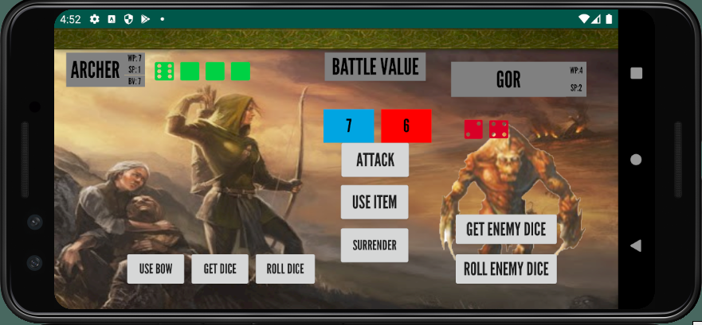
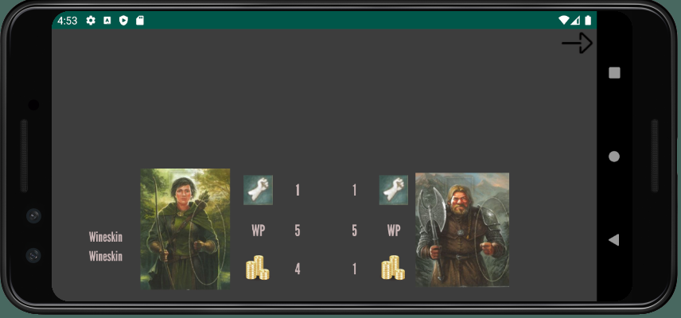
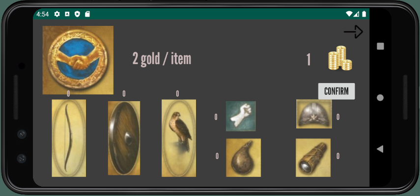

Legends of Andor
- Demo
-
Details
This was a course project I completed with five others during my third year at McGill. We were instructed to implement a digital version of the board game Legends of Andor on a platform of our choosing. We chose to implement it for Android devices, using Android Studio, SpringBoot, and IntelliJ.
The acceptance criteria for the game were:
- All core features of the game must be present including free actions, player movement, monster fights, farmers, witches, princes, and runestones.
- The game must be playable from start to finish without any crashes, errors, or unexpected behavior.
- There must be a login/logout functionality for players.
- The game must have the ability to save/load games.
We used a client-server architecture to develop this game using SpringBoot for the server, and Android Studio for the client. It was the largest scale project I completed during my undergrad and it took us two semesters to complete. We used object-oriented programming principles and leveraged several design patterns including the Singleton, Flyweight, and Observer. We worked with threads, client, and server validation, and Spring REST services. We implemented additional features such as a chat room, a character details page, how-to-play pages, and a live waiting room where players can view the status of other players before the game begins. We also took the time to design a nice UI to make the game more enjoyable to play.
-
Media
